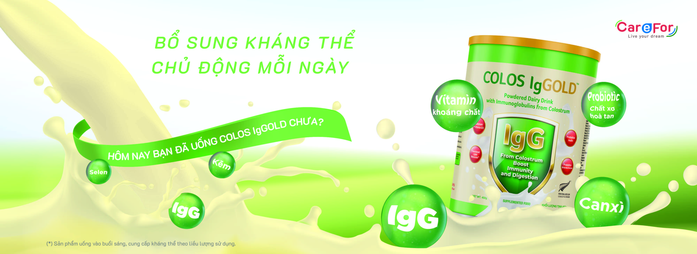
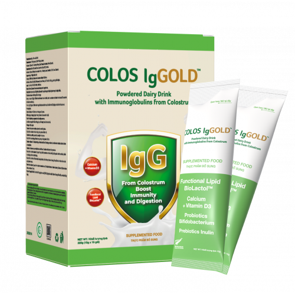

Sữa Non Cho Người Miễn Dịch Kém: Bí Quyết Khỏe Mạnh Từ Colos Iggold
Trong cuộc sống hiện đại, sức khỏe miễn dịch ngày càng được quan tâm, đặc biệt với trẻ nhỏ, người già và những người có hệ miễn dịch kém. Sữa non cho người miễn dịch kém đã trở thành giải pháp vàng, giúp bổ sung kháng thể tự nhiên và tăng cường sức đề kháng. Trong số đó, Colos Iggold nổi bật nhờ nguồn nguyên liệu chuẩn quốc tế, kết hợp với khả năng bổ sung canxi tối ưu, phù hợp cho cả trẻ em lẫn người lớn tuổi.
Tại Sao Người Miễn Dịch Kém Cần Sữa Non?
Hệ miễn dịch là "lá chắn" bảo vệ cơ thể khỏi virus, vi khuẩn. Tuy nhiên, nhiều người do tuổi tác, stress, chế độ ăn uống thiếu hụt, hoặc bệnh lý mạn tính dẫn đến sức đề kháng yếu, dễ mắc bệnh.
- Trẻ nhỏ dưới 6 tuổi có hệ miễn dịch chưa hoàn thiện, dễ cảm cúm, viêm phổi.
- Người cao tuổi miễn dịch suy giảm, nguy cơ mắc bệnh hô hấp, tiêu hóa cao.
- Người hay làm việc căng thẳng, ngủ kém, ăn uống thiếu dưỡng chất cũng rơi vào nhóm nguy cơ.
Sữa non cho người miễn dịch kém như Colos Iggold giúp cung cấp lượng kháng thể IgG cao, giúp cơ thể chống lại vi khuẩn, virus hiệu quả hơn.
Colos Iggold - Lựa Chọn Hoàn Hảo Cho Người Miễn Dịch Kém
Colos Iggold được sản xuất từ nguồn sữa non nguyên liệu nhập khẩu từ New Zealand, quốc gia nổi tiếng với tiêu chuẩn chăn nuôi sạch, chất lượng sữa đứng đầu thế giới.
- ✔️ Hàm lượng IgG cao: Giúp bổ sung kháng thể, nâng cao đề kháng.
- ✔️ Bổ sung canxi nano: Dễ hấp thu, giúp xương chắc khỏe, phù hợp với người già và trẻ nhỏ.
- ✔️ Chứa chất xơ hòa tan: Giúp cải thiện hệ tiêu hóa, giảm táo bón.
- ✔️ Vitamin D3, K2: Hỗ trợ hấp thụ canxi hiệu quả, tránh lắng đọng sai vị trí.
👉 Đây là lý do Colos Iggold không chỉ được tìm kiếm như sữa non cho người miễn dịch kém, mà còn là sữa non bổ sung canxi của New Zealand được nhiều phụ huynh, người cao tuổi tin dùng.
Sữa Non Cho Người Miễn Dịch Kém: Dùng Cho Ai?
- 👶 Trẻ em suy dinh dưỡng, hay ốm vặt
- 👩🦰 Phụ nữ sau sinh cần phục hồi sức khỏe
- 👴 Người cao tuổi muốn nâng cao đề kháng, phòng bệnh xương khớp
- 😷 Người hay mệt mỏi, stress, miễn dịch yếu
Việc dùng sữa non bổ sung canxi của New Zealand giúp những đối tượng này không chỉ khỏe mạnh hơn mà còn cải thiện chiều cao, xương chắc khỏe.
Lợi Ích Khi Dùng Sữa Non Colos Iggold Đều Đặn
- ✅ Giảm số lần trẻ bị cảm cúm, viêm họng
- ✅ Người già đỡ đau xương khớp, vận động dễ dàng
- ✅ Ăn ngon, ngủ tốt, tiêu hóa khỏe mạnh hơn
- ✅ Trẻ em tăng chiều cao rõ rệt nhờ canxi nano & vitamin D3, K2
Cách Dùng Sữa Non Cho Người Miễn Dịch Kém Hiệu Quả
- Trẻ nhỏ 1-6 tuổi: 1 lần/ngày, mỗi lần 2 muống gạt.
- Người lớn, người già: 2 lần/ngày, mỗi lần 2 muỗng gạt.
- Nên dùng lúc bụng rỗng để hấp thu tốt nhất.
Lưu ý: Duy trì liên tục 2-3 tháng để cảm nhận rõ hiệu quả.
So Sánh Colos Iggold Với Các Loại Sữa Non Khác
| Tiêu chí | Colos Iggold | Sữa non khác |
|---|---|---|
| Nguồn gốc nguyên liệu | New Zealand | Mỹ, Úc, Việt Nam |
| Hàm lượng IgG | Cao (trên 1000mg/100g) | Trung bình hoặc thấp |
| Bổ sung canxi | Canxi nano + D3 + K2 tối ưu hấp thu | Chỉ canxi đơn thuần |
| Hỗ trợ tiêu hóa | Có chất xơ hòa tan FOS | Có hoặc không |
Colos Iggold - Giải Pháp Vàng Cho Miễn Dịch & Xương Khớp
Trong thời đại dịch bệnh bùng phát, việc bảo vệ sức khỏe chủ động là ưu tiên hàng đầu. Sữa non cho người miễn dịch kém không chỉ giúp tăng cường đề kháng mà còn hỗ trợ sự phát triển chiều cao và chắc khỏe xương.
Colos Iggold với công thức nhập khẩu từ New Zealand chính là lựa chọn tối ưu, giúp bạn và gia đình khỏe mạnh từ gốc.
Tổng Kết
Nếu bạn đang tìm một sữa non bổ sung canxi của New Zealand vừa tăng miễn dịch, vừa tốt cho xương, hãy cân nhắc Colos Iggold. Sức khỏe là tài sản quý giá, và chăm sóc miễn dịch từ hôm nay là bước đi đúng đắn.
>>- Các bài viết liên quan